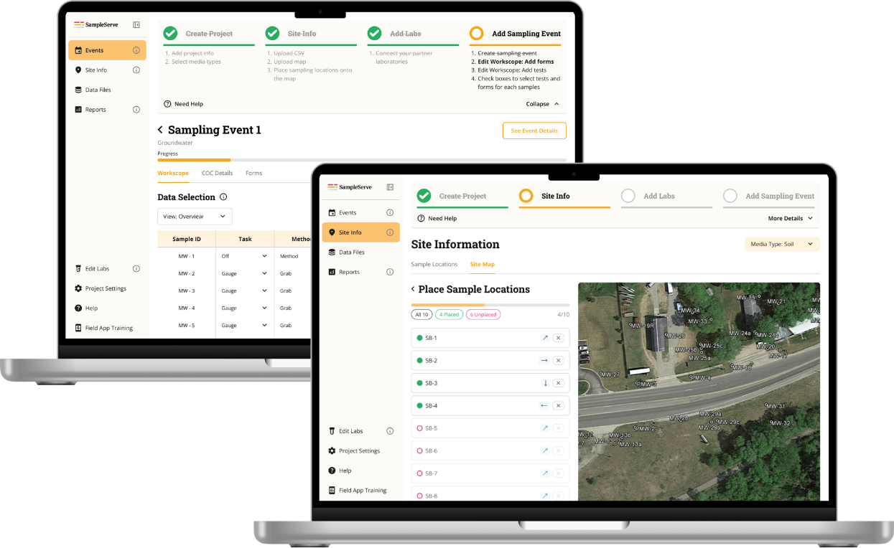
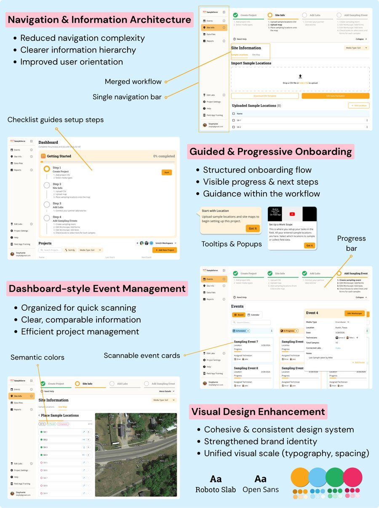

Redesigning environmental project onboarding to reduce setup friction and support independent user activation.
Environmental professionals relied on SampleServe to manage sampling projects, lab testing, and compliance reporting. But onboarding was difficult to navigate, causing users to abandon setup, rely heavily on support staff, and struggle to complete critical workflows independently. Over eight months, our team of four partnered with SampleServe to redesign onboarding and project setup through research, iterative design, and usability testing.
SampleServe's onboarding was intended to be self-service, but users struggled with project creation, site setup, lab configuration, and workflow navigation. As a UX researcher and UX designer, I conducted mixed-methods research, analyzed FullStory behavioral data, led interviews and usability testing, and synthesized findings into design decisions we then validated through testing. Our research combined FullStory clickstream analysis, user interviews, surveys, heuristic evaluation, and seven rounds of usability testing.
That research surfaced three things. First, users weren't failing because tasks were difficult, they were failing because they couldn't discover what to do next: FullStory showed a 59% drop-off when users needed to create events, with users pausing over 53 seconds searching for the right action before completion rates exceeded 97% once they found it. The issue was visibility, not complexity.
Second, onboarding depended on human support far more than it should have. Only 3.4% of users completed onboarding end-to-end independently, most leaned on demos, support calls, or outside resources.
"I didn't know there was an Add Event button until the demo showed me."
Guidance needed to live inside the product, not beside it. Across every method, the same pattern held: onboarding challenges were driven by poor discoverability, limited guidance, and missing feedback, not task difficulty. Users were capable, the system simply failed to support them independently.
We addressed this on four fronts. We consolidated a multi-layered navigation into a single, consistent bar and merged overlapping workflows, so people always knew where they were and what came next. We turned setup into a guided, progressive flow: a checklist with a visible progress bar, plus tooltips and pop-ups offering just-in-time help at each step. We rebuilt event management as a scannable dashboard, board-style cards grouped by status, so people could compare events at a glance instead of digging through lists. And we unified the visual system itself, consistent type, spacing, and semantic color, to make the product feel like one coherent tool rather than several stitched together.

In usability testing, project-creation success rose from 3 of 5 participants on the old interface to 7 of 7 on the redesign. Lab-connection errors dropped from an average of 5.8 per session to 1.4. The SUS score of 77 came in well above the industry benchmark of 68. Participants noticed the shift directly:
"It's a lot clearer... it gives you a preview of A to Z steps and walks you through it step by step."
Another put it more simply: that kind of guidance, she said, "is easy to follow and makes it easy to understand what to do next."
The research findings and redesign were handed off to SampleServe's team, with implementation planned.
This project taught me how to take something complex and break it into something people always understand; including where they are, what they've done, and what's next.